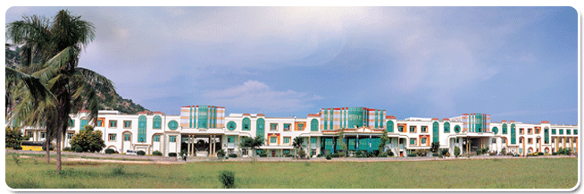

“Sri Venkateswara College of Engineering and Technology (Autonomous) (SVCET), Chittoor, is a NBA Accredited under Tier-I and NAAC Accredited Institution.
Established in the year 1998, the Institute is Affiliated to Jawaharlal Nehru Technological University, Ananthapuramu and Recognized by AICTE, New Delhi.
It is also Recognized by the UGC under Section 2(f) and 12(b).
The Institute has been Granted Autonomy by UGC from Academic Year 2011-2012
The Institute offers Ten(10) UG and Thirteen(13)PG programs in Engineering and Technology, MBA , MCA and offers Four(4) Diploma programms"
The college is located on high way in an area of 65 acres of scenic beauty at R.V.S. Nagar, Chittoor, Andhra Pradesh.
The College is located seven kilometers from Chittoor and 60 KM from Tirupathi, the famous hill shrine of Lord Sri Venkateswara.
The library has total books volumes of 49348 and 8223 titles, 132 national journals, and 74 international journals along with 34 magazines and 752 IEEE Online Journals.
SVCET has students from 43 countries and 18 states of india.
SVCET has been Recognized as College with Potential for Excellence by UGC,2016
SVCET has been ranked 15th in Competitive sucess review-2015.
SVCET Has been ranked 58th in The Week 2015.
SVCET was ranked 98th in DATAQUEST 2015
SVCET was ranked 6th in south INDIA, Silicon INDIA.
SVCET has been ranked AA Grade- May 2012-June 2013
SVCET has been Ranked 31st in Top Engineering Colleges of Excellence,Competitive sucess review, july 2012-june 2013
SVCET was ranked 8th in Andhra Pradesh ,July-2012
SVCET was ranked 44th by BUSSINESS BARONS in July- 2011.
SVCET was ranked 43rd by BUSSINESS ECONOMY in Nov-2011.
SVCET was ranked 3rd by Bussiness Digest in June-2011.
SVCET has been ranked 4th among the Top Engineering Colleges in Andhra Pradesh in a survey conducted by CSR-GHRDC in August, 2010
SVCET was ranked 30th in CSR-GHRDC list of top 50 Colleges in India.
SVCET was ranked 8 among top emerging colleges of excellence in India by CSR-GHRDC Survey, August 2010.
SVCET was graded with AA by Careers360 Magazine Survey, June 2010.
CSR- GHRDC Survey ranked SVCET with 3rd Rank in Andhra Pradesh for supreme excellence
SVCET was graded with AA by Careers360 Magazine Survey, June 2010.
At present, there are around 4000 students pursuing their M.Tech, B.Tech., MBA and MCA programs.